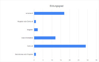
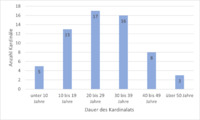
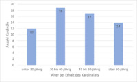
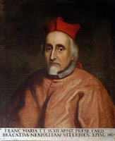
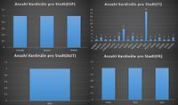

Static archive of a former Omeka site (snapshot 2026-11-24). Search and interactive features are not available.
Skip to main content
Data literacy 2021
Willkommen
Demographie des Kardinalskollegiums 1644
Herkunft
Sozialer Stand
Bildung
Kardinalate
Turmbücher
Soziale Probleme und Verbrechen
Personen und Namensgebung
Visualisierung
Straftaten: Fallbeispiele
Impressum
Restitutionsdebatte Schweiz
Becoming Benin Initiative Schweiz
Museen
Historisches Völkerkundemuseum St. Gallen
Museum Rietberg Zürich
Dokumentation
[Missing Page]
Kardinäle
Sammlung
Titel
Kardinäle
Objekte
von 1
1–12 von 12
Erweiterte Suche
Titel
Identifikator
Erstellt
Date (numeric:interval)
Date (numeric:timestamp)
Geburtsdatum (numeric:timestamp)
Sterbedatum (numeric:timestamp)
Aufsteigend
Absteigend
Sortieren
Bildungsgrad

Dauer der Kardinalate

Alter bei Erhalt des Kardinalats

Este Rinaldo d'
Vermutlich Gennari Benedetto
Rapaccioli Francesco Angelo
Panciroli Giovanni Giacomo
Maculani Vincenzo
Gemälde von Andrea Corna
Giori Angelo
Gemälde von Albertus Clouwet
Brancaccio Francesco Maria
Unbekannter Maler

Barberini Antonio Marcello Sr.
Gemälde von Antonio Alberti
Anzahl Kardinäle pro Stadt

Herkunft der Kardinäle
von 1
1–12 von 12